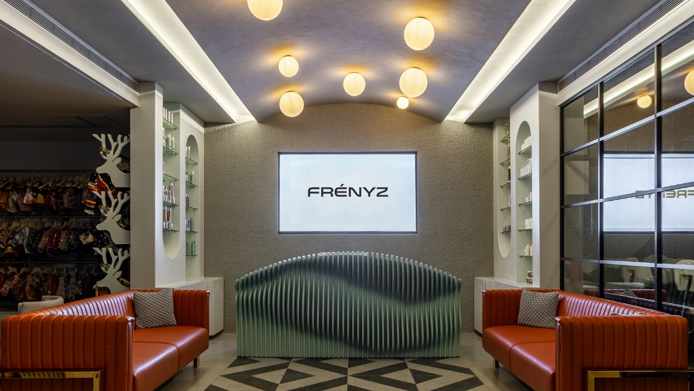

A visit to the salon is about much more than getting a haircut or a beauty treatment. It's a journey that begins with understanding your needs and ends with helping you look and feel your best. At Frenyz Vadodara, every salon experience is designed to be personalized, professional, and focused on enhancing your natural beauty while maintaining the health of your hair.
Whether you're visiting for a simple trim, a complete hair makeover, hair coloring, or a nourishing hair treatment, every step of your salon journey matters. From the initial consultation to the final styling, experienced professionals ensure that every service is tailored to your unique hair type, lifestyle, and beauty goals.
A professional salon experience goes beyond providing beauty services. It begins with understanding your concerns, analyzing your hair, and recommending treatments that suit your individual needs. Instead of offering the same service to every client, experienced hairstylists create customized solutions designed to support healthier, more manageable hair. At Frenyz Vadodara, every appointment focuses on achieving beautiful hair while keeping hair health in mind.
A professional consultation helps identify individual concerns before recommending an appropriate solution.
No two people have exactly the same hair. Factors such as hair texture, scalp condition, lifestyle, previous treatments, and personal preferences all influence which services may be suitable. A personalized salon experience helps reduce unnecessary treatments and allows services to be selected according to your individual needs.
This approach can create results that not only look beautiful but also support long-term hair care and maintenance.
Every appointment begins with a detailed consultation. Your stylist discusses your concerns, hair history, lifestyle, and expectations before recommending any service. This helps create a treatment plan that is tailored to your individual needs and desired results.
Your stylist carefully examines different aspects of your hair and scalp, including:
This assessment helps determine which services and products may be most appropriate for your hair.
Based on your consultation and hair assessment, your stylist may recommend services such as:
Every recommendation is based on your hair's condition, lifestyle, and desired outcome rather than simply following current trends.
Using professional techniques and quality products, your stylist performs the selected treatment with attention to both appearance and hair care. The goal is not only to transform your look but also to maintain the condition and manageability of your hair.
Once your treatment is complete, your hair is professionally styled to showcase the final result. Your stylist can also explain simple techniques to help you recreate or maintain the look at home.
Before you leave, you'll receive recommendations that may include:
Following appropriate aftercare can help maintain the appearance and condition of your hair between salon visits.
Every client can receive recommendations based on their individual hair condition, lifestyle, and beauty goals.
Regular salon visits can also help you maintain your hair care routine and address changing hair needs throughout the year.
To maximize your salon experience and results:
Building a relationship with your hairstylist can make it easier to understand your hair's changing needs and maintain consistent results over time.
Your salon journey is more than a single appointment—it's a partnership focused on helping you achieve healthy, beautiful hair. From the initial consultation to the final styling and aftercare guidance, every step at Frenyz Vadodara is designed to provide personalized attention and professional care.
Whether you're looking for a subtle refresh or a complete transformation, choosing a salon that understands your unique hair needs can help you achieve a look that suits your lifestyle and personal preferences. With the right professional guidance and consistent aftercare, you can leave feeling confident, refreshed, and ready to showcase your best look.